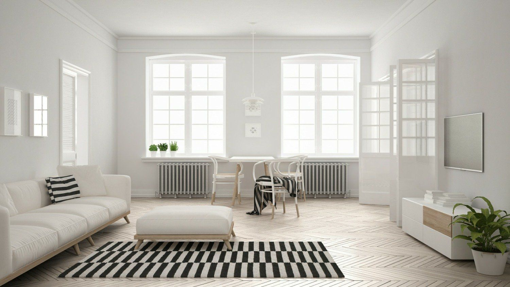

Sadelik ve zarafetin en güzel hali: Minimalism
13/12/2018 | Okuma Süresi: 4dk

Yazıyı okurken güzel bir müzik dinlemek istersen buraya tıkla.
Minimalism Ne Demek?
Minimalizm sözcük anlamı, Fransızca kökenli “minimum” sözcüğünden türemiştir. Minimum, sözlük anlamı “ Bir şey için gerekli en az veya en küçük miktar (derece, nicelik)” olarak tanımlanırken,
matematikteki ifadesi de, “değişken niceliğin inebildiği en alt basamak, asgari, minimal” şeklinde tanımlanmıştır. Minimalism sade, sadeleştirmek, yalın, yalınlık ve indirgemek kavramları ile bir bütündür.
Minimalizm bir felsefedir. Hayatındaki gereksiz şeylerden arınarak odaklanmanın gücüne inanılır.
Minimalist Olabilmek İçin Neler Yapmak Gerekir?
- Tüm fazlalıklardan kurtul! Nasıl yapacaksın? Kıyafet dolabını aç ve göz gezdir. Tüm kıyafetleri giyiyor musun? O kıyafeti en son ne zaman giydin? Hem neden aldın ki o kıyafeti? Evinde hangi eşyalar fazla? Neden hiç kullanmayacağın şeyleri sürekli dolduruyorsun evine? Kim bilir kaç tane eşya var paranı boşa harcadığın. Düşünsene o paraları biriktirmiş olsan neler yapabileceğini..
- Nefsine engel ol! Canın şuanda ne istiyor? Belki biraz abur-cubur yiyesin var. Yanında da bir içecek içtin. Yedin, içtin diyelim eline ne geçti? Koca bir hiç. Neden mi? Çünkü; o yediğin yiyecek sana hiçbir şey katmadı, üstüne üstlük zararları var. Kilo aldırmasının yanında bir sürü hastalığı düşün. Paran gitti. İleride hasta oldun daha çok paran gitti. Kelebek etkisi bir nevi ha ne dersin? Sadece bir anlık nefis tatmini için nelerden olduğunu düşünsene? Ya da sigarayı düşün. Ne çok paranın gittiğini. Nefsinin esiri olmaktan kurtulmakta denebilir bence minimalisme.
- Çok ve boş konuşma!Sence konuşmakta bir engel midir bu felsefeye? Düşünsene?
- Zamanını boşa harcama! Arkadaşlarınla oturup sohbet etme demiyorum. Her şeyin kendince güzelliği var. Ama abartmaya ne gerek var. Hergün kaç saatini boşa harcadığını düşün. Boş harcamayıp o her zaman ulaşmak istediğin yer gelebilmek için efor harcadığını düşün. Belki yeni bir yetenek kazanmak, yabancı bir dil öğrenmek yada bir enstürman çalmayı öğrenmek. Güzel olmaz mıydı?
Tavsiyeler:
Hayatı bilinçli yaşayın. Eşyaları alırken ben buna neden ihtiyaç duyuyorum, olmazsa ne kaybederim deyin. Hali hazırda fazla olan eşyalarınızı yeni bir şeyler üretmek için değerlendirin, birilerine hediye edin yada ihtiyaç sahiplerine bağışlayın.
Cimrilik ile bu felsefeyi karıştırmayın, aradaki dengeyi iyi koruyun. Ucuz yaşamayın kaliteye önem verin, sadece gereksiz tüm şeylerden kurtulun.
Kendinize iyilik yapın ve hayatınızı düzene sokun. İleride ne çok şey kazandığınızı göreceksiniz.
Bu linke tıklayarak minimalism hakkında videolara ulaşabilir, daha çok fikir edinebilirsin.
Bunu başarabilirsin!